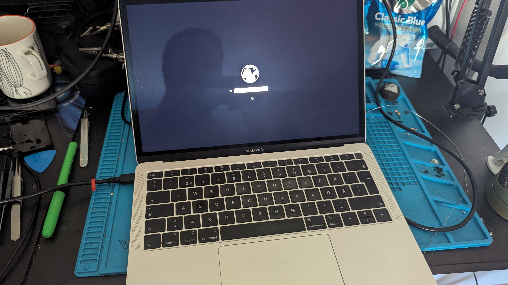
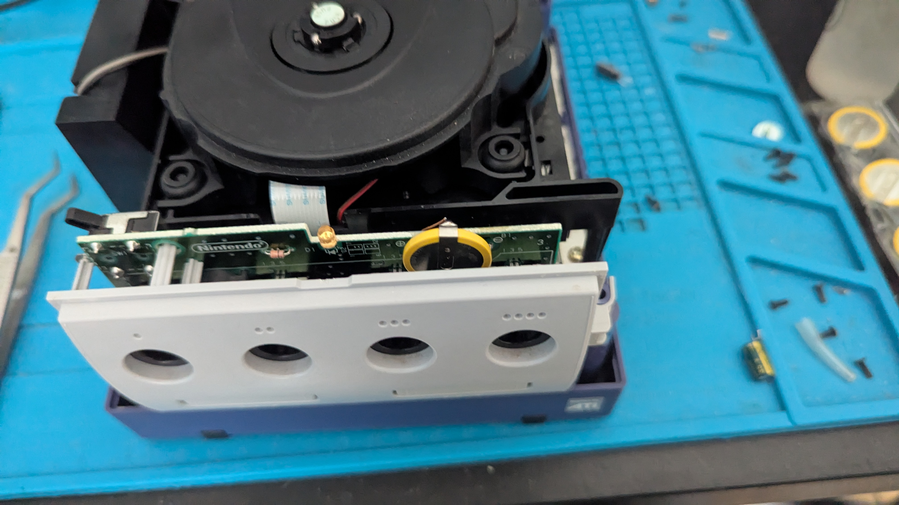
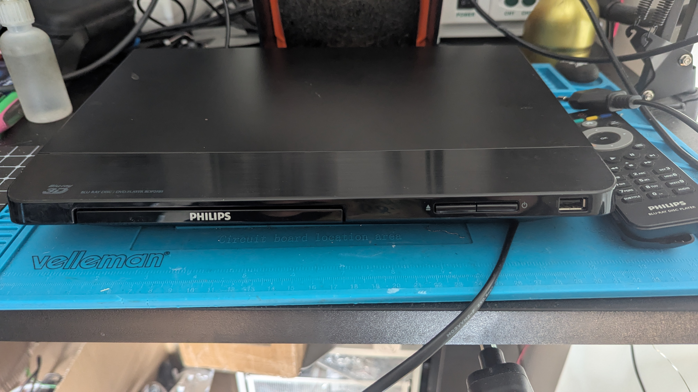
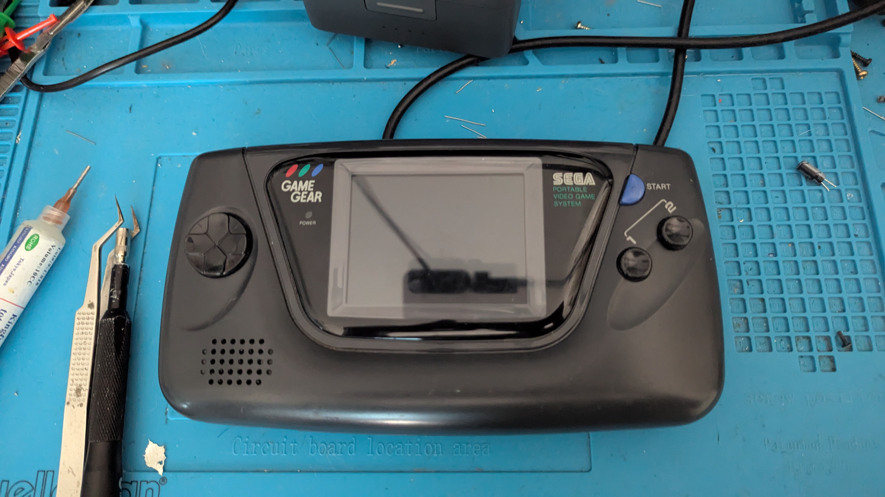
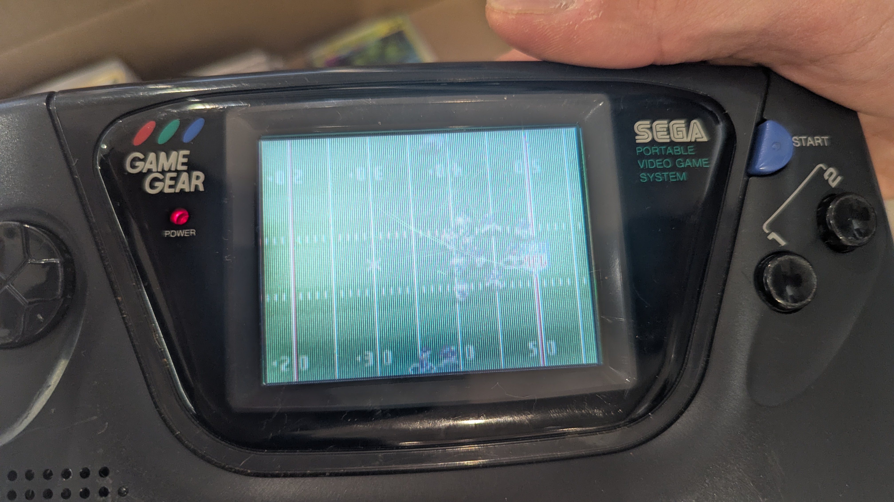
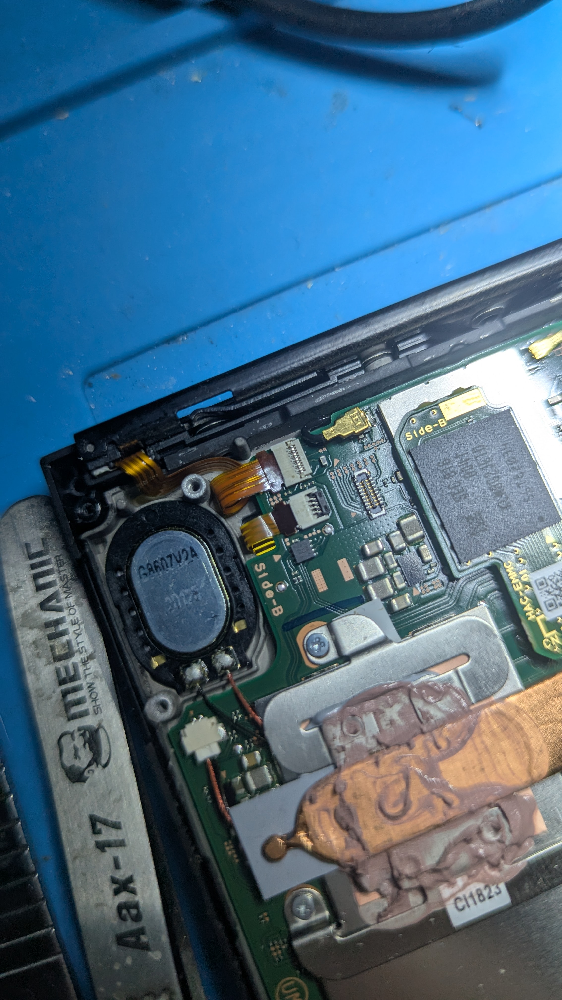
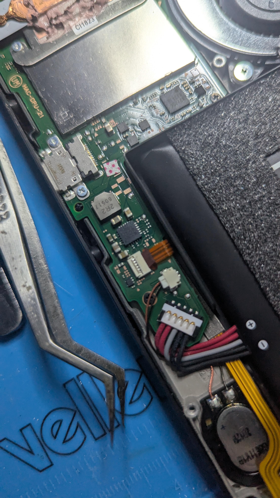
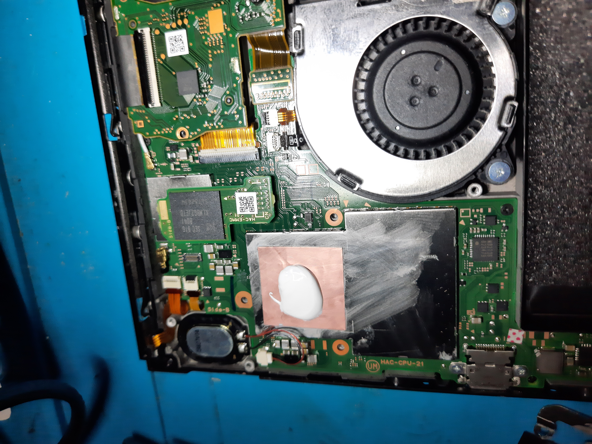

TMR-uppgradering, gameGear och mycket annat
Publicerat: 05 Maj, 2026 | Plats: Malmö
Nu har jag inte varit så superbra på att hålla bloggen uppdaterad ofta, men detta har hänt sedan sist!
🕹️ TMR-Uppgradering: K-Silver
Vi bytte ut slitna, driftande joysticks till splitternya K-Silver TMR sticks. Det här är den ultimata lösningen för dig som vill slippa stick drift permanent! 🧲✨. Som ni ser så var det en del kontroller som blev fixade


Mac som inte startade
Vi gav oss på en lite äldre macbook air som inte alls ville starta, visade sig vara touchpaden som spökade och nu är den tillbaka till sitt vanliga jag.

Glömst Nintendo Gamecube
Denna Nintendo Gamecube glömde hela tiden sina inställningar. Visade sig att den behövde ett nytt batteri och nu kommer den ihåg allt!

Blu ray spelare med dålig lucka
En blu ray spelare som inte kan öppna sin lucka är inget att ha. Vi fixade den genom att ersätta ett gummiband vid motorn samt ge den nytt plastfett.

🕹️ Fishy Sega Game gear!
Detta var ett projekt. En Game gear som hade kommit in. Problemet? Samma som vanligt. Alla kondensatorer hade läckt och luktade fisk, skärmen startade inte alls. Vi tog av dem gamla, rensade kretskortet som lyckligtvis nog inte hade blivit skadat och installerade nya kondensatorer. Nu funkar den exakt som ny!


🕹️ Nintendo switch som inte laddade joycons
Visade sig att en diod hade dött och blev ersatt. Kunden ville också ha service så den fick konsolen rengjord samt ny kylarpasta.



Behöver du hjälp med din enhet?
Vi lagar kontroller, konsoler och annan elektronik i Malmö eller via post.
BOKA REPARATION HÄREller SMS:a 079-032 06 05